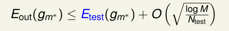
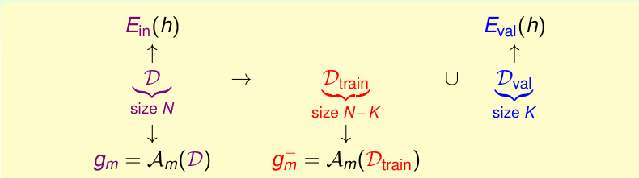
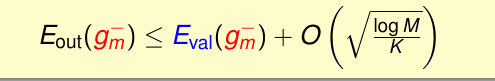
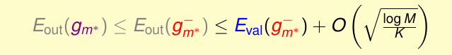

《机器学习基石》系列课程（十五）
本章的主要内容是应对Overfitting的另一种方法：Validation！
Model Selection Problem
我们已经遇过了很多模型选择问题：包括使用什么学习算法（PLA，LR，…），迭代的次数，学习率的选择，特征转换模型的选择，是否添加正则化以及添加什么样的正则化和正则化的系数选择等。我们所作出的所有的选择，最终都是为了得到一个好的假设g。
那么我们该怎样选择一个模型呢？我们的期望是选择Eout(g)很低的g，然而我们却不知道Eout(g)。
那么我们能不能肉眼来看呢？肯定是不能的，一方面人难以想象高维空间，另一方面，人会在选择过程中增加模型复杂度的偏差程度，这在第十二章中我们有过详细的讨论。
如果我们根据Ein选择呢？答案也是否定的，更复杂的模型肯定比简单的模型在拟合已有数据这件事上做的更好，Ein也就更低。然而更复杂的模型的泛化能力会更差，这就导致了Ein更小的模型Eout很有可能更大。
我们可以用测试集来选择模型，选择Etest好的模型能够得到好的效果，我们可以根据finite-bin Hoeffding来确保这件事是正确的：

也就是说如果我们使用训练数据来选择模型，相当于老师用以前来做过的题作为考试题，不能体现学生的学习效果。我们用新的数据来测试系统，就不存在这样的问题。
然而我们一般不能得到测试数据，所以这件事又是难以实现的。
Validation
既然如此，我们可以从已有的数据中随机抽取一部分作为选择模型的数据，我们将它称为Validation Set（不能参与训练），而剩下的作为训练集。当然，抽取的Dval必须仍然满足原有数据的分布（iid，也就是说需要随机选择）:

此时，通过训练集训练得到的gm的Eout和Eval满足：

根据我们之前的学习可知，当数据量N越大时，Eout越小，那么我们可以知道在整体数据获得的g的Eout、训练集和验证集的Eout的关系：

选择在Eval表现最好的模型我们能得到Eout表现比较好的模型。
那么验证集的占比应该是多少呢？通常设置为N / 5，过大过小都不好。
Leave-One-Out Cross Validation
留一交叉验证法，每次取一个作为验证，其余作为训练，直到所有N个数据均验证后，对误差求平均。
对计算要求高，稳定性不好。
V-Fold Cross Validation
K折交叉验证。
将N个训练数据分为K份，和留一交叉验证方法相同，降低计算复杂性，提高稳定性。留一交叉验证可以看做是它的一个特例！
文章内容和图片均来自“国立台湾大学林轩田老师”的《机器学习基石》课程！
— END —